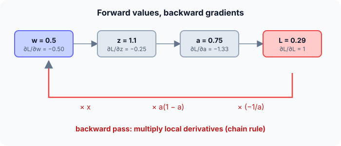

Prerequisites
- Forward propagation.
- Derivatives and the chain rule: $\frac{dL}{dw} = \frac{dL}{da} \cdot \frac{da}{dz} \cdot \frac{dz}{dw}$.
- Cross-entropy loss.
The analogy
Everyday analogy
Think of a recipe that came out too salty. You trace back: the sauce was too salty, because the stock was too salty, because too much salt went into the stock. Each step passes the blame back to its ingredients, in proportion to how much they affected the result.
Backpropagation passes "blame" (the gradient) backwards through the network, layer by layer, with the chain rule.
How it works
Chain rule here: $\frac{\partial L}{\partial w} = \frac{\partial L}{\partial a} \cdot \frac{\partial a}{\partial z} \cdot \frac{\partial z}{\partial w}$ with $L = -\ln a$, $a = \sigma(z)$, $z = wx + b$.
Start with one gradient by hand
Forward pass first: $z = 0.5 \cdot 2 + 0.1 = 1.1$, $a = \sigma(1.1) \approx 0.750$. Predict each backward factor, then open "Check".
Example: predict before you read
Step 1. $\partial L / \partial a = -1/a$ and $\partial a / \partial z = a(1 - a)$. Compute both.
Check
$-1/0.750 \approx -1.333$ and $0.750 \cdot 0.250 \approx 0.187$.
Step 2. Cover the next line and guess: multiply them to get $\partial L/\partial z$. Compare with $a - y$.
Check
$-1.333 \cdot 0.187 \approx -0.250$, exactly $a - y = 0.750 - 1$. Sigmoid with cross-entropy simplifies to that.
Step 3. $\partial z/\partial w = x = 2$ and $\partial z/\partial b = 1$. Predict both gradients and the update with learning rate 0.1.
Check
$\partial L/\partial w \approx -0.499$, $\partial L/\partial b \approx -0.250$. New $w \approx 0.550$, new $b \approx 0.125$.

Quick recall: Before reading further, cover the text above and say out loud: what does the sign of $\partial L/\partial w$ tell you?
Check your answer
Negative means increasing $w$ lowers the loss; positive means decreasing $w$ lowers it. Gradient descent moves against the sign.
Finish the picture: did the step help?
Use the updated parameters $w = 0.550$, $b = 0.125$.
- New forward pass. Predict $z$, $a$ and the loss.
Check
$z = 1.1 + 0.125 = 1.225$, $a = \sigma(1.225) \approx 0.773$, loss $\approx 0.257$, down from 0.287.
- A hidden layer. Predict how the gradient reaches a weight one layer earlier.
Check
Multiply the output's $\partial L/\partial z$ by the weight connecting to the hidden neuron, then by that neuron's activation slope, then by its input: the same chain rule, one more link.
Quick recall: Without scrolling up, say out loud: in a two-layer network, what does the gradient for a hidden weight need from the layer above?
Check your answer
The gradient flowing back from the next layer (its $\partial L/\partial z$ times the connecting weight), multiplied by the local activation slope and input.
Full worked calculation
Backpropagation through the whole two-layer network from the forward-propagation page, for $x = [1, 2]$ and $y = 1$. The forward pass gave $z_1 = [-1.5, 2.5]$, $a_1 = [0, 2.5]$, $z_2 = -0.8$, $\hat y = 0.31$, loss 1.171. We go backwards, layer by layer, then apply one update with learning rate 0.5.
| Quantity | Formula | Value |
|---|---|---|
| $\partial L/\partial z_2$ | $\hat y - y$ | −0.69 |
| $\partial L/\partial w_2$ | $\partial L/\partial z_2 \cdot a_1$ | [0, −1.725] |
| $\partial L/\partial b_2$ | $\partial L/\partial z_2$ | −0.69 |
| $\partial L/\partial a_1$ | $\partial L/\partial z_2 \cdot w_2$ | [−0.69, 0.276] |
| $\partial L/\partial z_1$ | times ReLU$'(z_1) = [0, 1]$ | [0, 0.276] |
| $\partial L/\partial W_1$ | $\partial L/\partial z_1 \otimes x$ | [[0, 0], [0.276, 0.552]] |
-
1Start at the output
$$\frac{\partial L}{\partial z_2} = \hat y - y = 0.31 - 1 = -0.69$$For sigmoid plus cross-entropy the derivatives simplify to "prediction minus truth". Negative means "the score $z_2$ should go up".
-
2Gradients of the output layer
$$\frac{\partial L}{\partial w_2} = -0.69 \cdot [0,\; 2.5] = [0,\; -1.725], \qquad \frac{\partial L}{\partial b_2} = -0.69$$A weight's gradient is the error at its output times the input it multiplies. Hidden neuron 1 output 0, so its outgoing weight gets no blame at all.
-
3Send the error back to the hidden layer
$$\frac{\partial L}{\partial a_1} = -0.69 \cdot [1,\; -0.4] = [-0.69,\; 0.276]$$Each hidden output receives the output error times the weight that connects it. Hidden neuron 2 has a negative weight (−0.4), so to raise $z_2$ its activation should go down: positive gradient.
-
4Through the ReLU
$$\text{ReLU}'(z_1) = [0,\; 1] \;\Rightarrow\; \frac{\partial L}{\partial z_1} = [-0.69 \cdot 0,\; 0.276 \cdot 1] = [0,\; 0.276]$$ReLU's slope is 0 where its input was negative (−1.5) and 1 where it was positive (2.5). The switched-off neuron blocks the gradient completely: it will not learn from this example.
-
5Gradients of the first layer
$$\frac{\partial L}{\partial W_1} = \begin{bmatrix} 0 \\ 0.276 \end{bmatrix} [1,\; 2] = \begin{bmatrix} 0 & 0 \\ 0.276 & 0.552 \end{bmatrix}, \qquad \frac{\partial L}{\partial b_1} = [0,\; 0.276]$$Same rule as before: error at the neuron times its input. The second input is 2, so its weight gets twice the gradient of the first.
-
6Update every parameter (η = 0.5)
$$w_2 = [1,\; -0.4 + 0.862] = [1,\; 0.462], \quad b_2 = 0.545, \quad W_1 \text{ row 2} = [0.862,\; 0.224], \quad b_1 = [0,\; 0.362]$$$\theta \leftarrow \theta - 0.5 \cdot \partial L / \partial \theta$. The biggest change is $w_2$'s second entry, which flips from negative to positive.
-
7Check: forward again
$$z_1 = [-1.5,\; 1.672], \quad z_2 = 0.462 \cdot 1.672 + 0.545 = 1.318, \quad \hat y = 0.789, \quad L = 0.237$$The prediction moved from 0.31 to 0.79 and the loss fell from 1.171 to 0.237. One backward pass computed all 9 gradients for the price of about one forward pass.
What the numbers tell us
Backpropagation is the chain rule applied from the loss backwards: at every layer, gradient of the weights = incoming error × the layer's input, and the error is passed back through the weights and the activation's slope.
A ReLU that was off (hidden neuron 1) passes no gradient; if it stays off for every example it never learns, the "dead ReLU" problem.
The rule in plain words
Do a forward pass and cache every $z$ and $a$. Start the backward pass with $\partial L/\partial \hat y$ and, layer by layer from the output, multiply by each local derivative (chain rule).
For each layer: $\delta = \partial L/\partial z$; weight gradient = $\delta \times$ input; pass $W^\top \delta$ times the previous activation's slope down to the layer below.
Quick recall: Before you read the code, describe the backward pass for one sigmoid neuron with cross-entropy, in your own words. Then check below.
Check your answer
Compute the output $a$; the error signal is $a - y$; the gradient for each weight is that signal times its input, and for the bias it is the signal itself.
The code
Read this code after you have done the gradients by hand. It will make more sense.
void grads(double w, double b, double x, int y, double out[]) { /* out = {dL/dw, dL/db, loss} */
double z = w * x + b; /* forward */
double a = 1 / (1 + exp(-z));
double dz = a - y; /* dL/dz for sigmoid + cross-entropy */
out[0] = dz * x; /* chain rule: dz/dw = x */
out[1] = dz; /* dz/db = 1 */
out[2] = y ? -log(a) : -log(1 - a);
}Definition
What you just did, in one line: backpropagation computes the gradient of the loss with respect to every parameter by applying the chain rule backwards through the network, reusing values from the forward pass.
flowchart RL
L["loss L"] -->|"dL/da = -1/a"| A["a = sigmoid(z)"]
A -->|"da/dz = a(1 - a)"| Z["z = w x + b"]
Z -->|"dz/dw = x"| W["gradient for w"]
Z -->|"dz/db = 1"| Bb["gradient for b"]
Putting numbers on it
Quick recall: Before looking at the formula, predict: how does the cost of backpropagation compare with one forward pass?
Check your answer
About the same order, roughly two to three times, because it reuses the cached values and visits each layer once.
The chain rule for our neuron, and the gradient-descent update:
$$\frac{\partial L}{\partial w} = \underbrace{-\frac{1}{a}}_{-1.333} \cdot \underbrace{a(1 - a)}_{0.187} \cdot \underbrace{x}_{2} = (a - y)\,x \approx -0.499, \qquad w \leftarrow w - \eta \frac{\partial L}{\partial w}$$| Quantity | Formula | Value |
|---|---|---|
| $\partial L/\partial a$ | $-1/a$ | $-1.333$ |
| $\partial a/\partial z$ | $a(1 - a)$ | $0.187$ |
| $\partial L/\partial z$ | $a - y$ | $-0.250$ |
| $\partial L/\partial w$ | $(a - y)\,x$ | $-0.499$ |
| $\partial L/\partial b$ | $a - y$ | $-0.250$ |
Warning
Gradients multiply through the layers. With sigmoid or tanh slopes below 1 they can shrink exponentially (vanishing gradients); with large weights they can blow up (exploding gradients). ReLU, careful initialisation, normalization and gradient clipping help.
Exam tip
Always do the forward pass first and write down every intermediate value; then write the chain of local derivatives as a product and plug in. Remember the shortcut $\partial L/\partial z = a - y$ for sigmoid + cross-entropy (and softmax + cross-entropy).
Common mistakes
- Forgetting a factor of the chain, typically the activation's slope.
- Using the updated weights for some layers and the old ones for others in the same backward pass.
- Getting the sign of the update wrong: subtract the gradient, don't add it.
Try it yourself
Exercise 1 (warm-up)
Same neuron but true label $y = 0$. Compute $\partial L/\partial z$, $\partial L/\partial w$, and the direction $w$ should move.
Hint
$\partial L/\partial z = a - y$.
Answer
$\partial L/\partial z = 0.750$, $\partial L/\partial w = 1.50$: positive, so $w$ should decrease to lower $a$.
Exercise 2 (a bit harder)
Use squared error $L = \tfrac12 (a - y)^2$ instead of cross-entropy, with $y = 1$. Compute $\partial L/\partial w$ and compare it with the cross-entropy gradient. Write your answer down before you open it.
Show answer
$\partial L/\partial a = a - y = -0.250$; times $a(1 - a) = 0.187$ gives $-0.047$; times $x = 2$ gives $\partial L/\partial w \approx -0.094$, about 5 times smaller than $-0.499$. The sigmoid slope shrinks squared-error gradients, which is why classification uses cross-entropy.
Did you know?
Did you know?
Backpropagation was popularised by Rumelhart, Hinton and Williams in 1986, building on earlier work by Linnainmaa (1970) and Werbos (1974).
It is a special case of reverse-mode automatic differentiation; PyTorch's loss.backward() runs exactly this for whatever network you define.
Key points to remember
If you remember one thing from each line, remember the because.
- Backprop uses the chain rule because the loss is a composition of simple functions.
- It runs backwards because each layer's gradient needs the gradient of the layer above it.
- It reuses the forward cache because local derivatives depend on the stored $z$ and $a$ values.
- The gradient for a weight is signal × input because $\partial z/\partial w$ is the input it multiplies.
- Gradients can vanish because many slopes below 1 are multiplied together.
Self-check questions
Answer these in order, out loud. They follow the page, so your answers become the script of your video.
- How is backpropagation like tracing back a recipe that came out too salty?
Sample answer
You pass the blame back step by step to the ingredients that caused it, in proportion to their effect, just as gradients flow back layer by layer.
- Compute $\partial L/\partial w$ for $x = 2$, $w = 0.5$, $b = 0.1$, $y = 1$, sigmoid with cross-entropy.
Sample answer
$a \approx 0.750$, $\partial L/\partial z = a - y = -0.250$, so $\partial L/\partial w = -0.250 \cdot 2 \approx -0.499$.
- Why does the code compute
dz = a - yinstead of multiplying $-1/a$ by $a(1 - a)$?A good answer simplifies the product.
Sample answer
$-\frac{1}{a} \cdot a(1 - a) = -(1 - a) = a - 1 = a - y$ for $y = 1$ (and similarly for $y = 0$), so the simple form is exact and avoids dividing by $a$.
- So what is backpropagation, in one sentence?
Sample answer
An algorithm that computes the gradient of the loss for every parameter by applying the chain rule backwards through the network.
- Why does a negative gradient mean the weight should increase?
A good answer uses the update rule.
Sample answer
The update is $w \leftarrow w - \eta\,\partial L/\partial w$; subtracting a negative number increases $w$, which is the direction that lowers the loss.
- What do the gradients for $w$ and $b$ equal for a sigmoid neuron with cross-entropy?
Sample answer
$\partial L/\partial w = (a - y)\,x$ and $\partial L/\partial b = a - y$.
- What are vanishing gradients, and why do they happen?
Sample answer
Gradients that shrink to almost 0 in early layers, because backprop multiplies many slopes below 1 (e.g. sigmoid's at most 0.25).
- If you had to teach this to a friend in 2 minutes, what would you leave out, and why?
Sample answer
I'd leave out vanishing gradients and the squared-error comparison. I'd keep the salty-recipe analogy, the one-neuron gradient $-0.499$, and "forward, then chain rule backwards, then update".
External resources
- 3Blue1Brown: Backpropagation calculus: the chain rule in a network, visually.
- Neural Networks and Deep Learning, chapter 2: how backpropagation works, with the four equations.
- Stanford CS231n: Backpropagation: local gradients on computational graphs.
- PyTorch tutorial: Autograd: automatic backpropagation in practice.
Videos
- 3Blue1Brown: What is backpropagation really doing?: the intuition before the calculus.